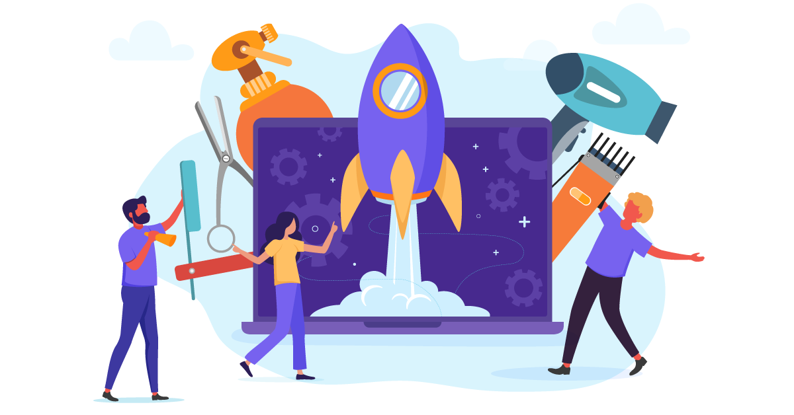

Qual é a importância da tecnologia para o mundo (nós)?
O avanço da tecnologia trouxe grandes mudanças em todas as áreas de nossa existência, as principais são o trabalho, a educação, a comunicação, as relações sociais e os processos produtivos.
Algumas vantagens da tecnologia em nossas vidas
Acesso à informação
A criação da internet e do mundo web parecia uma realidade inimaginável há algumas décadas atrás. Todas as perguntas que precisaríamos de horas lendo livros podem ser respondidas em menos de um minuto quando pesquisadas na internet. O acesso a notícias, respostas ou imagens específicas é de extrema facilidade e agilidade hoje em dia.
Mobilidade
Ainda não temos carros voadores voando por aí, ou será que temos? Carro voador chinês faz seu primeiro voo público, confira aqui.
A facilidade de mobilidade certamente é uma grande vantagem que a tecnologia nos proporcionou, desde bicicletas até aviões, carros e caminhões. Todos nos ajudam a chegar a algum lugar mais rápido que antes e, o melhor, sem nos cansarmos! Além de nos ajudar a transportar qualquer coisa que queiramos mover, seja para outra cidade, outro estado ou até outro país.
Meios de comunicação
Há menos de um século atrás o melhor e mais tecnológico meio de comunicação era a carta. Consegue imaginar você enviando uma carta agora? Não há necessidade, já que podemos simplesmente fazer uma videochamada para a pessoa que está longe de nós e ver sua cara enquanto conversamos com ela. Os meios de comunicação progrediram imensamente e isso facilitou muito a nossa vida.
Evolução do dinheiro
Ninguém jamais pensou que estaria pagando em bitcoins em vez de dólares menos de uma década atrás. Além de vários meios criados para um pagamento mais rápido e simples da conta, a criptomoeda vem ganhando cada vez mais espaço no mundo dos negócios devido à sua utilidade. Hoje em dia ninguém precisa esperar horas nas filas dos bancos para pagar suas contas, podendo realizar pagamentos deitados no sofá de suas casas
.Técnicas de aprendizagem
As salas de aulas vêm sendo preenchidas com equipamentos eletrônicos que facilitam a vida tanto dos alunos quanto dos professores. E o aprendizado EAD? Mesmo com algumas dúvidas envolvidas, a ideia de não precisar sair de casa para realizar as tarefas da aula parece muito boa para alguns, apesar de ruim para outros. Aulas EAD ainda são um divisor de águas, tendo prós e contras.
Gostando ou não, os meios antes utilizados estão sendo substituídos por outros que são considerados mais tecnológicos e eficientes que os anteriores. É fato que os seres humanos estão levando o planeta para a era da tecnologia moderna, mas isso irá salvar a Terra ou destruí-la?